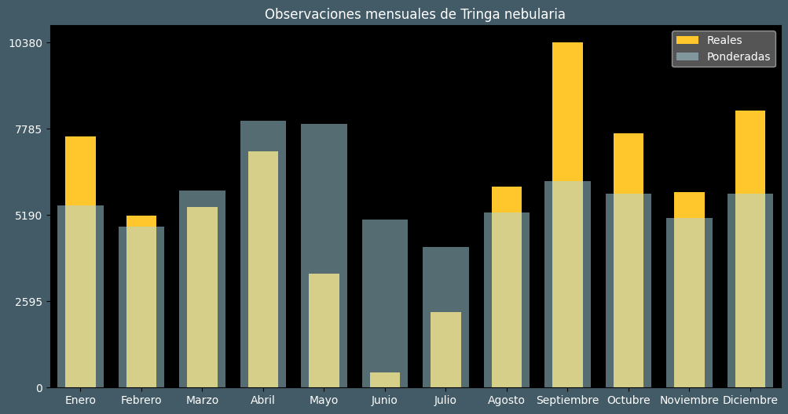

Observaciones por mes
Observations por hora

Categoría IUCN: ?
Género: Tringa
Familia: Scolopacidae
Orden: Charadriiformes
Descubrimiento: Gunnerus (1767)
| Idioma | Nombre |
|---|---|
| Afrikaans (af) | Groenpootruiter |
| Arabic (ar) | طيطوي خضراء الساق |
| Belarusian (be) | Кулiк-селянец |
| Bulgarian (bg) | Голям зеленоног водобегач |
| Catalan (ca) | Gamba verda |
| Chinese (zh) | 青脚鹬 |
| Chinese traditional (zh-TW) | 青足鷸〔青腳鷸〕 |
| Croatian (hr) | Krivokljuna prutka |
| Czech (cs) | Vodouš šedý |
| Danish (da) | Hvidklire |
| Dutch (nl) | Groenpootruiter |
| English (en) | Common greenshank |
| Estonian (et) | Heletilder |
| Finnish (fi) | Valkoviklo |
| French (fr) | Chevalier aboyeur |
| German (de) | Grünschenkel |
| Greek (el) | Πρασινοσκέλης |
| Hebrew (he) | ביצנית ירוקת-רגל |
| Hungarian (hu) | Szürke cankó |
| Icelandic (is) | Lyngstelkur |
| Indonesian (id) | Trinil kaki-hijau |
| Italian (it) | Pantana |
| Japanese (ja) | アオアシシギ |
| Korean (ko) | 청다리도요 |
| Latvian (lv) | Lielā tilbīte |
| Lithuanian (lt) | Žaliakojis tulikas |
| Maceodnian (mk) | Зеленонога тринга |
| Malayalam (ml) | പച്ചക്കാലി |
| North_sami (se) | Stuoračoavžžu |
| Norwegian (no) | Gluttsnipe |
| Persian (fa) | آبچلیک پاسبز |
| Polish (pl) | Kwokacz |
| Portuguese (pt) | Perna-verde-comum |
| Russian (ru) | Большой улит |
| Serbian (sr) | Krivokljuni sprudnik |
| Slovak (sk) | Kalužiak sivý |
| Spanish (es) | Archibebe claro |
| Swedish (sv) | Gluttsnäppa |
| Thai (th) | นกทะเลขาเขียวธรรมดา |
| Turkish (tr) | Yeşilbacak |
| Ukrainian (uk) | Коловодник великий |